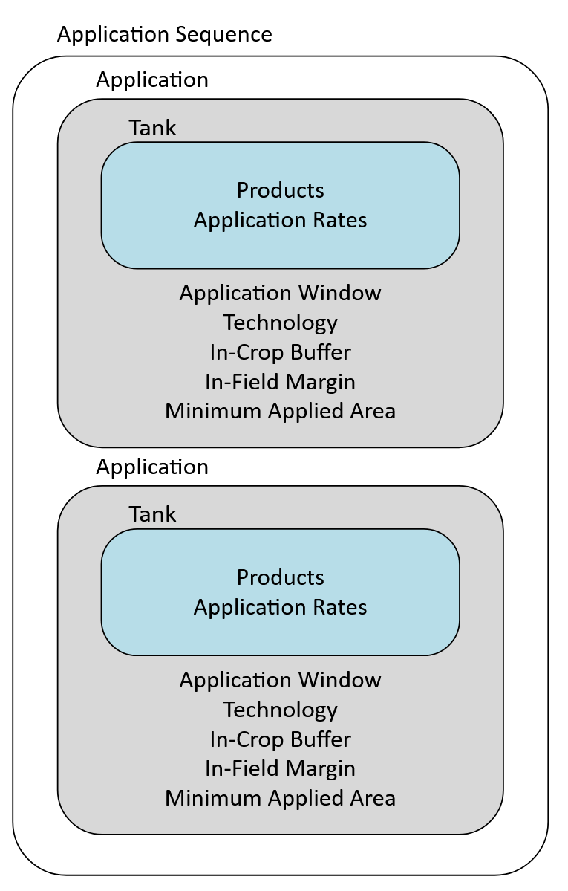

PPM Calendar Technical Details
This section contains technical details about PPM Calendar elements. Examples of PPM Calendar files and explanations are located in the Templates.
Note
'|' symbols are used to separate options in a list.
General Structure
The general structure of a PPM calendar is
<PPMCalendar>
<TemporalValidity/>
<TargetCrops/>
<Indications>
<Indication>
<ApplicationSequence>
<Application>
<Tank>
<Products/>
<ApplicationRates>
<ApplicationRate/>
</ApplicationRates>
</Tank>
<ApplicationWindow/>
<Technology/>
<InCropBuffer/>
<InFieldMargin/>
<MinimumAppliedArea/>
</Application>
</ApplicationSequence>
</Indication>
</Indications>
</PPMCalendar>
Application
Type: N/A
Unit: N/A
Scales: N/A
Notes:
- Each
Applicationin anApplicationSequencewill be applied to the same field.
Temporal Validity
Type: none, xCropProtection.MonthDaySpan, or xCropProtection.DateSpan
Unit: N/A
Scales: time/simulation|time/day|time/year
Notes:
- Format: 'mm-dd to mm-dd' or 'yyyy-mm-dd to yyyy-mm-dd'.
- Set 'always' if the PPM Calendar should be applied over the whole simulation.
Apply calendar over the whole simulation:
<TemporalValidity scales="time/simulation"> always </TemporalValidity>
Apply calendar over specific months each year:
<TemporalValidity type="xCropProtection.MonthDaySpan">
01-01 to 06-30
</TemporalValidity>
Apply calendar only on specific years:
<TemporalValidity type="xCropProtection.DateSpan">
2001-01-01 to 2001-12-31
</TemporalValidity>
Target Crops
Type: int or list[int]
Unit: N/A
Scales: global|time/day|time/year
Notes:
- This is an optional element. It should only be included in a PPMCalendar.xml if applications must be restricted to specific crop types.
- Separate target crops with a space.
Apply PPM calendar to fields with crop type 9:
<TargetCrops type="list[int]" scales="global">
9
</TargetCrops>
Apply PPM calendar to fields with crop type 9 or 16:
<TargetCrops type="list[int]" scales="global">
9 16
</TargetCrops>
Target Fields
Type: int or list[int]
Unit: N/A
Scales: global|time/day|time/year
Notes:
- This is an optional element. It should only be included in a PPMCalendar.xml if applications must be restricted to specific fields.
- Separate target fields with a space.
- The name of the identifier which uniquely identifies each field can be changed in package.xinfo located in a scenario's geo folder.
Only apply PPM Calendar to field 100:
<TargetFields type="list[int]" scales="global">
100
</TargetFields>
Only apply PPM Calendar to fields 30 and 31:
<TargetFields type="list[int]" scales="global">
30 31
</TargetFields>
Indications
Type: N/A or xCropProtection.ChoiceDistribution
Unit: N/A
Scales: time/year, space/base_geometry
Notes:
- If the type of this element is left blank, xCP will sample all
Indications. If the type of this element is "xCropProtection.ChoiceDistribution", xCP will sample oneIndicationbased on specified probability values. See Multiple Indications and Multiple Indications with Choice for examples.
Sample all Indications:
<Indications>
<Indication>
...
</Indication>
<Indication>
...
</Indication>
<Indications>
Sample 1 Indication based on probability values:
<Indications type="xCropProtection.ChoiceDistribution" scales="time/year, space/base_geometry">
<Indication probability="0.6">
...
</Indication>
<Indication probability="0.4">
...
</Indication>
<Indications>
Indication
Type: xCropProtection.ChoiceDistribution
Unit: N/A
Scales: time/year, space/base_geometry
Choose 1 ApplicationSequence based on probability values:
<Indication type="xCropProtection.ChoiceDistribution" scales="time/year, space/base_geometry">
<ApplicationSequence probability="0.5">
...
</ApplicationSequence>
<ApplicationSequence probability="0.5">
...
</ApplicationSequence>
</Indication>
Application Sequence
Type: N/A
Unit: N/A
Scales: N/A
Notes:
ApplicationSequenceprobabilities must sum to exactly 1.0 for eachIndication.

Example of 1 ApplicationSequence:
<ApplicationSequence probability="1">
...
</ApplicationSequence>
Example of 2 ApplicationSequence elements:
<ApplicationSequence probability="0.5">
...
</ApplicationSequence>
<ApplicationSequence probability="0.5">
...
</ApplicationSequence>
Tank
Type: N/A
Unit: N/A
Scales: N/A
Notes:
- If a tank mixture is being implemented (more than 1 product in the
Tank), the number of products in theTankmust be the same as the number ofApplicationRatesdefined.
A Tank containing 1 product:
<Tank>
<Products type="list[str]" scales="other/products">
Product 1
</Products>
<ApplicationRates scales="other/products">
<ApplicationRate type="float" unit="g/ha" scales="global">
100
</ApplicationRate>
</ApplicationRates>
</Tank>
A Tank containing a tank mix with 2 products:
<Tank>
<Products type="list[str]" scales="other/products">
Product 1|Product 2
</Products>
<ApplicationRates scales="other/products">
<ApplicationRate type="float" unit="g/ha" scales="global">
100
</ApplicationRate>
<ApplicationRate type="float" unit="g/ha" scales="global">
70
</ApplicationRate>
</ApplicationRates>
</Tank>
Products
Type: list[str] (list of strings)
Unit: N/A
Scales: other/products
Notes:
- Multiple products in the
Productselement must be separated with a | symbol. Products may have spaces in their names. - The name defined in this element is what will be assigned to fields as they receive applications.
Application Rates
Type: float, xCropProtection.NormalDistribution, or xCropProtection.UniformDistribution
Unit: g/ha
Scales: global|time/day|time/year|time/day, space/base_geometry|time/year, space/base_geometry
Constant ApplicationRate:
<ApplicationRate type="float" unit="g/ha" scales="global">300</ApplicationRate>
ApplicationRate with uniform distribution:
<ApplicationRate type="xCropProtection.UniformDistribution" unit="g/ha" scales="time/year, space/base_geometry">
<Lower type="float" scales="global">100</Lower>
<Upper type="float" scales="global">150</Upper>
</ApplicationRate>
ApplicationRate with normal distribution:
<ApplicationRate type="xCropProtection.NormalDistribution" unit="g/ha" scales="time/year, space/base_geometry">
<Mean type="float" scales="global">50.0</Mean>
<SD type="float" scales="global">4.0</SD>
</ApplicationRate>
Application Window
Type: xCropProtection.MonthDaySpan
Unit: N/A
Scales: global
Notes:
- Format is Month-Day.
- Input must be in format "Month-Day to Month-Day".
<ApplicationWindow type="xCropProtection.MonthDaySpan" scales="global">
05-05 to 05-16
</ApplicationWindow>
Technology
Type: string
Unit: N/A
Scales: global
Notes:
- This value must match a
Technologyelement in Technologies.xml.
In Crop Buffer
Type: float, xCropProtection.NormalDistribution, or xCropProtection.UniformDistribution
Unit: m (meter)
Scales:
- Constant: global
- Normal/Uniform distribution: time/year, space/base_geometry|time/day, space/base_geometry
Notes:
- A value less than 0 will not increase field size.
- The values of
InCropBufferandInFieldMarginare cumulative.
Constant InCropBuffer:
<InCropBuffer type="float" unit="m" scales="global">0</InCropBuffer>
InCropBuffer with a uniform distribution:
<InCropBuffer type="xCropProtection.UniformDistribution" unit="m" scales="time/year, space/base_geometry">
<Lower type="float" scales="global">5</Lower>
<Upper type="float" scales="global">10</Upper>
</InCropBuffer>
InCropBuffer with a normal distribution:
<InCropBuffer type="xCropProtection.NormalDistribution" unit="m" scales="time/year, space/base_geometry">
<Mean type="float" scales="global">5</Mean>
<SD type="float" scales="global">1</SD>
</InCropBuffer>
In Field Margin
Type: float, xCropProtection.NormalDistribution, or xCropProtection.UniformDistribution
Unit: m (meter)
Scales:
- Constant: global
- Normal/Uniform distribution: time/year, space/base_geometry|time/day, space/base_geometry
Notes:
- A value less than 0 will not increase field size.
- The values of
InCropBufferandInFieldMarginare cumulative.
Constant InFieldMargin:
<InFieldMargin type="float" unit="m" scales="global">0</InFieldMargin>
InFieldMargin with a uniform distribution:
<InFieldMargin type="xCropProtection.UniformDistribution" unit="m" scales="time/year, space/base_geometry">
<Lower type="float" scales="global">5</Lower>
<Upper type="float" scales="global">10</Upper>
</InFieldMargin>
InFieldMargin with a normal distribution:
<InFieldMargin type="xCropProtection.NormalDistribution" unit="m" scales="time/year, space/base_geometry">
<Mean type="float" scales="global">5</Mean>
<SD type="float" scales="global">1</SD>
</InFieldMargin>
Minimum Applied Area
Type: float, xCropProtection.NormalDistribution, or xCropProtection.UniformDistribution
Unit: m² (meter²)
Scales:
- Constant: global
- Normal/Uniform distribution: time/year, space/base_geometry|time/day, space/base_geometry
Notes:
- If a field's area is smaller than this value after applying the
InCropBufferandInFieldMarginvalues, no application will occur.
Constant MinimumAppliedArea:
<MinimumAppliedArea type="float" unit="m²" scales="global">0</MinimumAppliedArea>
MinimumAppliedArea with a uniform distribution:
<MinimumAppliedArea type="xCropProtection.UniformDistribution" unit="m²" scales="time/year, space/base_geometry">
<Lower type="float" scales="global">100</Lower>
<Upper type="float" scales="global">150</Upper>
</MinimumAppliedArea>
MinimumAppliedArea with a normal distribution:
<MinimumAppliedArea type="xCropProtection.NormalDistribution" unit="m²" scales="time/year, space/base_geometry">
<Mean type="float" scales="global">100</Mean>
<SD type="float" scales="global">5</SD>
</MinimumAppliedArea>